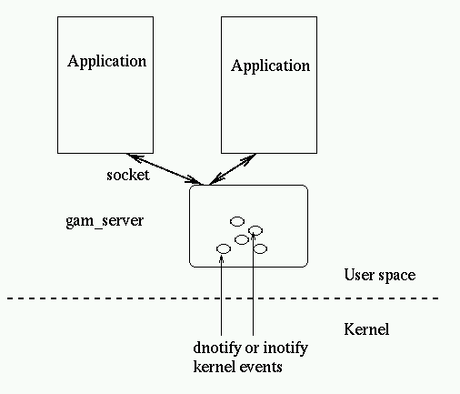
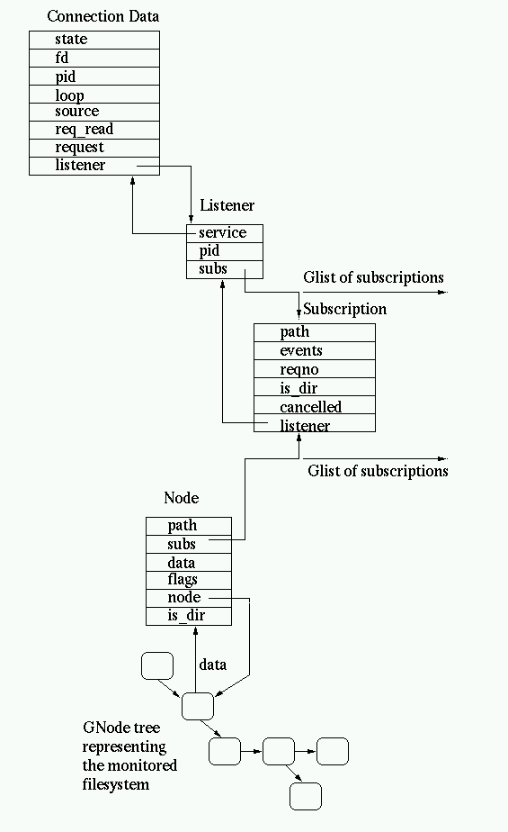

Gamin is a file and directory monitoring system defined to be a subset of the FAM (File Alteration Monitor) system. This is a service provided by a library which allows to detect when a file or a directory has been modified.
Gamin is a file and directory monitoring system defined to be a subset of the FAM (File Alteration Monitor) system.
The main goals of the project are:
Gamin also serves as an interface to test the inotify mechanism to improve the existing dnotify monitoring interface present in the Linux kernel.
At this point Gamin is fairly tied to Linux, portability is not a primary goal at this stage but if you have portability patches they are welcome.
From an historical point of view, gamin builds from the marmot project authored by James Willcox and Corey Bowers and then heavilly modified to turn it into a minimalist FAM replacement (French litterate will appreciate the filiation from fam to marmot and gamin.)
This library is available under the terms of the GNU LIBRARY GENERAL PUBLIC LICENSE, and a copy of it should be found in the source under the COPYING file.
Basically it is exactly like for using the fam interface. From a programmer point of view this is the same API, and one can make use of the existing FAM documentation.
By default gamin should work without needing any configuration, but
sometimes using the kernel notification APIs doesn't work or lead to troubles
(for example when trying to unmount device). By default gamin revert to using
polling for all paths matching /mnt/* or /media/*
on Linux. This may be overriden or extended by the config file
$HOME/.gaminrc . Here is an example of such a configuration
file:
# configuration for gamin # Can be used to override the default behaviour. # notify filepath(s) : indicate to use kernel notification # poll filepath(s) : indicate to use polling instead notify /mnt/local* /mnt/pictures* poll /temp/*
The configuration file accepts only 2 types of command:
When checking a path to guess whether polling or kernel notification
should be used, gamin checks first the user provided rules in their
declaration order within the configuration file and then check the predefined
rules. This way the first declaration for /mnt/local* in the
example override the default one for /mnt/* .
Caveat: separators in the config file should be spaces, not tabs.
You can download gamin from the GNOME project pages, either as sources, and binaries or source RPMs.
The CVS base is in the GNOME project CVS base at cvs.gnome.org, the module name is gamin. See the Gnome CVS Tools page for more information on using CVS.
We expect bug reports to be entered in GNOME bugzilla or in Red Hat bugzilla.
The best way to contact the developers is to use the mailing-list gamin-list@gnome.org.
Before reporting a bug please double-check:
Then the best way is to log the bug in one of the bugzilla or join the list and post there if you think that some of gamin design or code should be changed. If you can provide a testgam scenario reproducing the problem this would really help getting it debugged and fixed, see examples in tests/scenario/ .
This will be created as user feedback is provided.
Both the client and server side, if compiled with debug support accept an environment variable GAM_DEBUG which is set will make them report debugging informations to stdout.
Usually for debugging you also want to use a dedicated server process so setting the GAM_CLIENT_ID environment allows to ensure this. Usually one also want to keep control over the server lifetime and not have it exit automatically after 30 seconds without connection, there is a command line flag --notimeout to gam_server for this.
A typical example of a debugging session using 2 shells would be:
shell1: export GAM_DEBUG= shell1: gam_server --notimeout test
to run the server in debug mode using the ID "test"
shell2: export GAM_DEBUG= shell2: export GAM_CLIENT_ID=test shell2: gamin_client
to run the client in a verbose session. It is perfectly possible to also run the client under a debugger, for the server it works too except the dnotify kernel interface uses a signal SIG33 which is trapped by gdb. To avoid this use the handle gdb instruction:
(gdb) handle SIG33 nostop Signal Stop Print Pass to program Description SIG33 No Yes Yes Real-time event 33 (gdb)
even better add it to your $HOME/.gdbinit .
Both the gam_server and client of the gamin library can get switched dynamically to a debug mode by sending them a signal SIGUSR2. In that case the program or library switches to verbose debugging and outputs the traces to a new file /tmp/gamin_debug_XXXXXX . Sending the signal again to the application or the server should switch off debugging.
A debugging client program called testgam is also available in the tests subdirectory. It allow to use the interface and monitor the flow of event received. Here is an example of a session:
paphio:~/gamin/tests -> export GAMIN_DEBUG_SERVER="../server/gam_server" paphio:~/gamin/tests -> ./testgam - > connect test connected to test >
The environment variable can be used to specify the path to the server to run, then testgam is launched in interactive mode (argument - ) and the program is asked to connect to the server for session test (the server will be started on-demand by the library if needed).
> mkdir temp mkdir temp > mkfile temp/foo mkfile temp/foo > mondir temp mondir temp 0 > 1: /u/veillard/gamin/tests/temp Exists: NULL 1: foo Exists: NULL 1: /u/veillard/gamin/tests/temp EndExist: NULL > mkfile temp/bar mkfile temp/bar > 1: bar Created: NULL > rmfile temp/foo rmfile temp/foo > 1: foo Deleted: NULL >
In this example a new directory is created with a file in it and then monitored, then the directory content is modified. The testgam program also poll and report events coming from the server as they arrive.
While gamin still use a server to provide the service (ideally if the kernel had a proper interface a library only implementation should be doable and possibly better), it tries to avoid security hazard associated to contacting an external server process:
Here is the process used to acquire and create the sockets:
Use the filename "\0/tmp/fam-$USER-$GAM_CLIENT_ID". They are not mapped on the filesystem, no attack is possible that way. The client and the server checks on the first '\0' byte received from the socket that the other side is running under the same UID.
On the server side:
start:
try to create /tmp/fam-$USER using mkdir('/tmp/fam-$USER', 007)
if error:
make a stat() on it
if doesn't exist:
return failure to create
if user is not getuid() or mode is not 007 or type is not dir:
try to unlink()
if error:
exit with error.
if success:
goto start:
do the socket()/bind() on /tmp/fam-$USER/fam-$GAM_CLIENT_ID
On the client side:
make a stat on /tmp/fam-$USER
if doesn't exist:
return failure to create should start the server
if user is not getuid() or mode is not 007 or type is not dir:
try to unlink()
if error:
exit with error.
if success:
return failure should start the server
make a stat on /tmp/fam-$USER/fam-$GAM_CLIENT_ID
if doesn't exist:
return failure to create should start the server
if user is not getuid() or type is not socket:
try to unlink()
if error:
exit with error.
if success:
return failure should start the server
do the socket()/connect() on /tmp/fam-$USER/fam-$GAM_CLIENT_ID
The client and the server checks on the first '\0' byte received that the other side is of the same UID.
gamin uses a client server model, this is in a large measure justified by the inappropriate dnotify kernel API way to signal modification events to an application but also to share kernel signal when multiple application monitors the same resource. It also allow to fine tune and filters event flow in the daemon, potentially minimizing resource consumption in applications.

Internally the gam_server maintain various data structures:
